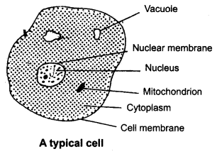
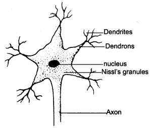
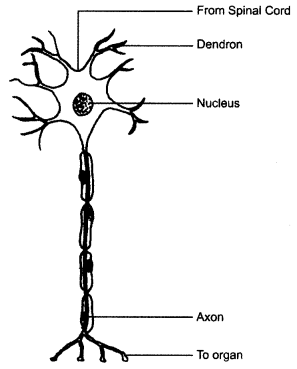

NCERT Solutions for Class 8 Science Chapter 8 Cell Structure and Functions
Topics and Sub Topics in Class 8 Science Chapter 8 Cell Structure and Functions:
| Section Name | Topic Name |
| 8 | Cell Structure and Functions |
| 8.1 | Discovery of the Cell |
| 8.2 | The Cell |
| 8.3 | Organisms show Variety in Cell Number, Shape and Size |
| 8.4 | Cell Structure and Function |
| 8.5 | Parts of the Cell Cell Membrane |
| 8.6 | Comparison of Plant and Animal Cells |
Cell Structure and Functions Class 8 Science NCERT Textbook Questions
Question 1.
Indicate whether the following statements are True (T) or False (F).
(a) Unicellular organisms have a one-celled body.
(b) Muscle cells are branched.
(c) The basic living unit of an organism is an organ.
(d) Amoeba has an irregular shape.
Answer:
(a) True
(b) True
(c) False
(d) True
Question 2.
Make a sketch of the human nerve cell. What function do nerve cells perform?
Answer:
Function of nerve cells: The function of the nerve cell is to receive and transfer messages, it helps to control and coordinate the working of different parts of the body.
Question 3.
Write short notes on the following.
(a) Cytoplasm
(b) Nucleus of a cell
Answer:
(a) Cytoplasm: The jelly-like substance found between the nucleus and the cell membrane is called cytoplasm. It is made up of basic elements like C, H, O, N. Various other components or organelles, like mitochondria, Golgi bodies, ribosomes, etc., of cells are present in the cytoplasm.
(b) Nucleus of a cell: Nucleus of a cell is an important component of the living cell. It is located at the centre of the cell. It is separated from the cytoplasm by a membrane called nuclear membrane. It contains genetic material.
Question 4.
Which part of the cell contains organelles?
Answer:
Cytoplasm
Question 5.
Make sketches of animal and plant cells. State three differences between them.
Answer:
| Plant cells | Animal cells |
| (i) The outermost covering is a cell wall and it is made of cellulose. | (i) The outermost covering of animal cell is the plasma membrane. |
| (ii) Plastids are present in plant cells. | (ii) Plastids are absent in animal cells. |
| (iii) Large vacuoles are present in plant cells. | (iii) No or very small vacuoles are present in animal cells. |
| (iv) It lacks centrosomes and lysosomes. | (iv) They have centrosomes or lysosomes. |
Question 6.
State the difference between eukaryotes and prokaryotes.
Solution:
| Eukaryotes | Prokaryotes |
| (i) Eukaryotes possess membrane-bound organelles. | (i) Prokaryotes lack membrane-bound organelles. |
| (ii) Nucleus of the cell has nuclear membrane. Example: higher plants and animals. | (ii) Nucleus is not bounded by membrane. Example: bacteria and blue-green algae. |
Question 7.
Where are chromosomes found in a cell? State their function.
Answer:
Chromosomes are present in the nucleus. The functions of chromosomes is to carry genes on them and to transfer the character from parents to the next generation.
Question 8.
‘Cells are the basic structural units of living organisms.’ Explain.
Answer:
Different cells combine to form tissues and tissues combine to form organs. Similarly, organs combine to form body. Thus they are termed as the basic structural unit of every living organism.
Question 9.
Explain why chloroplast are found only in plant cells?
Answer:
Chloroplasts are plastids required for the food making process, called photosynthesis, and thus they are only present in plant cells.
Question 10.
Complete the crossword with the help of clues given below.
Across
1. This is necessary for photosynthesis.
3. Term for component present in the cytoplasm.
6. The living substance in the cell.
8. Units of inheritance present on the chromosomes.
Down
1. Green plastids.
2. Formed by collection of tissues.
4. It separates the contents of the cell from the surrounding medium.
5. Empty structure in the cytoplasm.
7. A group of cells.
Solution:
Cell Structure and Functions Class 8 Science NCERT Intext Activities Solved
Activity 1 (NCERT Textbook, Page 92)
The teacher may show a permanent slide of Amoeba and Paramecium under a microscope. Alternatively, the teacher can collect pond water and show these organisms by preparing the slides.
Solution:
Do it yourself.
Activity 2 (NCERT Textbook, Page 93)
Boil a hen’s egg. Remove the shell. What do you observe? A white material surrounds the yellow part. The white material is albumin which solidifies on boiling. The yellow part is yolk. It is part of the single cell. You can observe this single cell without any magnifying device.
Solution:
Do it yourself.
Activity 3 (NCERT Textbook, Page 94)
In order to observe the basic components of the cell, take an onion bulb. Remove the dry pink coverings (peels). You can easily separate these from the fleshy white layers of the bulb with the help of forceps or even with your hand. You can also break the onion bulb and separate out thin layers. Place a small piece of the thin onion peel in a drop of water on a glass slide. The thin layer can be cut into smaller pieces with the help of a blade or forceps. Add a drop of methylene blue solution to the layer and place a coverslip on it. While placing the coverslip ensure that there are no air bubbles under the coverslip. Observe the slide under the microscope. Draw and label.
Solution:
The boundary of the onion cell is covered by a thick covering called the cell wall. The central dense round body in the centre is called the nucleus. The jelly-like substance between the nucleus and the cell membrane is called cytoptasm.
Activity 4 (NCERT Textbook, Page 94)
Take a clean tooth pick, or a matchstick with the tip broken. Scrape inside of your cheek without hurting it. Place it in a drop of water on a glass slide. Add a drop of iodine and place a coverslip over it. Alternatively, add 1 -2 drops of methylene blue solution. Observe it under the microscope. You may notice several cells in the scraped material (Fig. 8.2). You can identify the cell membrane, the cytoplasm and nucleus. A cell wall is absent in animal cells.
Solution:
Do it yourself.
NCERT Solutions for Class 8 Science Chapter 8 – 1 Mark Questions and Answers
Question 1.
………… is the outermost layer of an animal cell. [KVS 2008; MSE (Chandigarh) 2006]
Answer:
Plasma membrane/Cell membrane
Question 2.
What is the name given to the green plastids ? [MSE (Chandigarh) 2007]
Answer:
The green plastids are called chloroplasts.
Question 3.
Name two organelles present in the plant cell but not in the animal cell. [KVS 2005]
Answer:
Cell wall and chloroplast are found in plant cell but not in animal cell.
Question 4.
Which part of the cell contains organelles ? [NCERT]
Answer:
Cytoplasm contains the organelles.
Question 5.
Why cells could not be observed before 17th century ?
Answer:
Cells could not be observed before 17th century because microscope was not available for viewing the cells.
Question 6.
Why Hooke had to take thin slices of cork ?
Answer:
He made thin slices of cork because the cork was solid and its details could not be seen.
Question 7.
Where did Hooke demonstrate cork slice ?
Answer:
Hooke demonstrated cork slice in Royal society of London.
Question 8.
Single celled organisms are also called unicellular organisms (True/False)
Answer:
True.
Question 9.
Name the cells having branched structure.
Answer:
Nerve cell.
Question 10.
Which cell is observable with unaided eye ?
Answer:
Ostrich egg.
Question 11.
Name the outermost layer of animal cell.
Answer:
Cell membrane or plasma membrane.
Question 12.
Mention the layer outside the plasma membrane of a plant cell.
Answer:
Cell wall.
Question 13.
Which four basic elements constitute 90% of protoplasm ?
Answer:
90% of protoplasm is made up of carbon, hydrogen, nitrogen and oxygen.
Question 14.
The term cell was coined by ………….
Answer:
Robert Hooke.
Question 15.
Cell wall is present in …………. only.
Answer:
Plant cell.
Question 16.
Which organism has smallest cell ?
Answer:
Bacterium mycoplasmas has the smallest cell.
Question 17.
How do you differentiate protoplasm from cytoplasm ?
Answer:
Cytoplasm is the jelly-like substance occupying most of the space inside the cell. Protoplasm includes the cell membrane, the cytoplasm and the nucleus.
Question 18.
Draw a typical cell. Label important organelles.
Answer:

Question 19.
What name is given to living things having more than one cell ?
Answer:
Multicellular organisms.
Question 20.
Can unicellular organisms be seen with the naked eye ?
Answer:
Unicellular organisms can only be viewed with the help of a microscope.
Question 21.
Give two examples of unicellular animals.
Answer:
Amoeba, paramoecium.
Question 22.
Name the parts of the cell.
Answer:
The three parts of cell — The Cell membrane, Cytoplasm and Nucleus.
Question 23.
What is the jelly-like fluid inside the nucleus called ?
Answer:
The jelly-like fluid inside the nucleus is called nucleoplasm.
Question 24.
What are chromosomes ?
Answer:
Chromosomes are thread-like structures which play an important role in the inheritance of characters from one generation to another
Question 25.
What is the function of Golgi bodies ?
Answer:
Golgi bodies collect and distribute the substances made in the cell.
Question 26.
Which part of the animal cell is concerned with cell division ?
Answer:
Centrioles and centrosome.
Question 27.
Give other name for cell membrane.
Answer:
Plasma membrane.
Question 28.
What are vacuoles ?
Answer:
The clear spaces surrounded by a membrane present in the cytoplasm are called vacuoles.
Question 29.
What is meant by division of labour ?
Answer:
In multicellular organisms, the cells are specialised to the perform certain functions. This is known as division of labour.
Question 30.
What is meant by cell division ?
Answer:
New cells for growth and reproduction are formed by cell division.
Question 31.
Why are the nerve cells long and thread like ?
Answer:
Nerve cells are long and thread-like projections, as they have to convey messages to different parts of the body.
Question 32.
Which cells in our body grow and divide all through the life ?
Answer:
The cells of the skin grow and divide all through the life.
Question 33.
Name a unicellular organism which is about 10 cm in length.
Answer:
An alga known as Acetabularia.
Question 34.
Human body has
- one million cells
- one billion cells
- one trillion cells
- more than a trillion cells
Answer:
more than a trillion cells.
Question 35.
Name the basic structural and functional unit of life.
Answer:
Cell.
NCERT Solutions for Class 8 Science Chapter 8 – 2 Mark Questions and Answers
Question 1.
What is a cell ? Name the longest cell in human body. Draw its diagram also. [NCT 2007]
Answer:
All organisms are made of basic units known as Cell. Nerve Cell is the longest cell in hyman body.

Question 2.
Why are mitochondria known as the “power house of the cell” ? [DAV2005]
Answer:
Mitochondria is known as the power house of the cell because they perform the function of respiration and provide the cell with energy.
Question 3.
Are the cells of an elephant larger than cells of a rat ?
Answer:
No, the size of the cell has no relation with the size of the body of the animal or plant.
Question 4.
What are the “building blocks of life” ? Why are they so called ?
Answer:
Cells are building blocks of life because all living things are made up of one or more cells.
Question 5.
What is the difference between tissue and organ ?
Answer:
Group of cells of the same type make up the different tissues of the organisms, e.g., muscle tissue.
Several different types of tissues together form an organ, e.g., a stomach.
Question 6.
Differentiate between an organ and a system.
Answer:
Several different types of tissues that work together to perform one or more life activities is known as an organ.
An organ system is a group of organs that work together to carry on life activities.
Question 7.
Name an organ system in the human body and the major organs that make up that system.
Answer:
Organ system — Digestive system.
It is made up of organs such as intestines, liver, stomach, pancreas, gall bladder.
Question 8.
What features are possessed by both plant cells and animal cells ?
Answer:
All plant and animal cells have three parts — cell membrane, cytoplasm and nucleus.
Question 9.
Name the organelle known as “suicide bags” ? Why is it called so ?
Answer:
Lysosomes are known as suicide bags. They contain enzymes which help in breaking down or destroying the various materials.
Question 10.
Give the functions of cell wall.
Answer:
- It provides rigidity to the cell wall.
- It provides protection against plant viruses and pathogens.
Question 11.
Draw diagrams to show the difference between plant cell and animal cell. [NCT 2010]
Answer:
NCERT Solutions for Class 8 Science Chapter 8 – 3 Mark Questions and Answers
Question 1.
Name any three elements which form major part of protoplasm. [MSE (Chandigarh) 2006]
Answer:
Protoplasm is made up of compounds of carbon, hydrogen, nitrogen and oxygen.
Question 2.
- Why are plant cells more rigid in shape than animal cells ? [DAV2006]
- Name the largest and the smallest cells in the living world.
- Tomatoes are red and leaves are green. Why ?
Answer:
- Plant cells are more rigid in shape than animal cells due to the presence of cell wall.
- Largest – Ostrich’s egg.
Smallest – PPLO (Pleuro Pneumonia Like Organisms). - Tomatoes are red because of chromoplasts in their cells.
Leaves are green because of chloroplasts in their cells.
Question 3.
Distinguish between prokaryotes and eukaryotes.
Answer:
Differences:
| Prokaryotes | Eukaryotes |
| (i) The organisms having prokaryotic cells are called prokaryotes. | (i) The organisms have eukaryotic cells are called eukaryotes. |
| (ii) In prokaryotes, there is no nuclear membrane in cells. | (ii) There is a nuclear membrane around the nucleus. |
| (iii) e.g., Bacteria and blue green algae | (iii) e.g., Onion cells and cheek cells. |
Question 4.
Make a sketch of the human nerve cell. What function do nerve cells perform ?
Answer:
Nerve cell — Nerve cells receive messages through dendron and transfer it through axon.

Question 5.
If you boil a hen’s egg, what changes do you observe ?
Answer:
When a hen’s egg is boiled, a white material surrounds the yellow part. White material is albumin which solidifies on boiling. The yellow component is yolk.
Question 6.
What are the functions of the cell membrane ?
Answer:
- It protects the cell.
- It provides shape to the cell.
- It allows materials to enter and leave the cell through the tiny holes.
Question 7.
Give the functions of the following :
- Endoplasmic reticulum
- Golgi complex
- Ribosomes
Answer:
- Endoplasmic reticulum being a network of membranes, provides a large surface area for life functions to take place.
- Golgi complex collects and distributes the substance made in the cell and it synthesises and secretes many materials.
- Ribosomes is the site of protein synthesis.
Question 8.
- What is a cell ?
- Who discovered the cell ?
- Name one microscopic organism.
Answer:
- Living things are made up of tiny living parts known as cells.
- Robert Hooke, an English scientist in 1665 discovered the cell.
- Amoeba is a microscopic organism.
NCERT Solutions for Class 8 Science Chapter 8 – 5 Mark Questions and Answers
Question 1.
Differentiate between plant and animal cell. [NCT 2011]
Answer:
Differences:
| Animal Cell | Plant Cell |
| (i) Cell wall is absent. | (i) A rigid cell wall is present |
| (ii) Chloroplasts are absent. | (ii) Chloroplasts are present. |
| (iii) Centrosome (a cell organelle that helps in cell division) is present near the nucleus. | (iii) Centrosome is absent |
| (iv) Vacuoles are absent; small in size. | (iv) Vacuoles are present and larger in size. |
Question 2.
Indicate whether the following statements are True (T) or False (F). [NCERT]
- Unicellular organisms have one-celled body.
- Muscle cells are branched.
- The basic living unit of an organism is an organ.
- Amoeba has a irregular shape.
Answer:
- T
- F
- T
- T
Question 3.
Write short notes on the following : [NCERT]
- Cytoplasm
- Nucleus of a cell
Answer:
- Cytoplasm is the fluid present between the cell membrane and the nucleus. Organelles of cells are present in the cytoplasm. These are mitochondria, Golgi bodies, ribosomes, etc. Cytoplasm is made up of basic elements like C, H, O, and N. They are found in the form ef carbohydrates, proteins and water.
- Nucleus of a cell is generally spherical and located in the centre of the cell. Nucleus is separated from the cytoplasm by a membrane called the nuclear membrane. Nucleus also contains nucleolus and chromosomes. Nucleus helps in inheritance and acts as control centre of the activities of the cell.
Question 4.
Describe the variations in shape and size of cells.
Answer:
Cell size. Some cells are very small and visible only with a microscope. Smallest cell is of bacterium, PPLO. An ostrich egg is the largest animal cell. In plants an alga, Acetabularia has a single cell of about 10 cm in length.
Cell shapes are very diverse. Some cells like those of Amoeba and white blood cells continuously change their shape. Most cells, however, maintain their constant shape. The shape of the cell is related to its function.
Question 5.
Name the different parts of the nucleus and give the function of each part.
Answer:
- Nuclear membrane — It separates the nucleus from the cytoplasm. It allows the exchange of substances between the nucleoplasm and the cytoplasm.
- Nucleoplasm — Chromosomes and nucleoli are present in the nucleoplasm.
- Chromosomes — Play an important role in the inheritance of characters from one generation to another.
Question 6.
Give the functions of the following parts of the cell:
- Vacuoles.
- Centrioles.
- Cellulose.
- Plasma membrane.
- Nucleus.
Answer:
- Vacuoles store the chemicalproducts which accumulate within the cell due to the various life functions taking place inside the cell.
- Centrioles present in animal cells are concerned with cell division.
- Cellulose is present in plant cell and provides rigidity and protection to the cell.
- Plasma membrane protects the cell and allows materials to enter and leave through the tiny holes.
- Nucleus controls everything that takes place in the cell.
Question 7.
Explain the mode of cell division in Amoeba. [KVS 2006, 2007, 2008]
Answer:
The cell divides and splits into two parts known as daughter cells. The daughter cells are identical to the parent cell. The nucleus of the parent cell divides into two, followed by the division of cytoplasm. Finally, the two daughter cells are formed.
Question 8.
In multicellular organisms, how does growth take place ? [NCT 2005 ; MSE (Chandigarh) 2008]
Answer:
In multicellular organisms, the cells divide for reproduction and also multiply for growth. The increase in the number of cells is brought about by cell division. The cells so produced undergo a change in size and shape and the whole organism shows over all growth.
NCERT Solutions for Class 8 Science Chapter 8 MCQs
Question 1.
The structure which Robert Hooke observed under his self-designed microscope was
(a) cell wall
(b) cell membrane
(c) both (a) and (b)
(d) living cell
Answer:
(a)
Question 2.
Which of the following is covered by a single membrane ?
(a) Mitochondria
(b) Vacuole
(c) Lysosome
(d) Plastid
Answer:
(b)
Question 3.
Kitchen of the cells is known as
(a) mitochondria
(b) endoplasmic reticulum
(c) chloroplast
(d) Golgi apparatus.
Answer:
(c)
Question 4.
Cell theory was given by
(a) Schleiden and Schwann
(b) Virchow
(c) Robert Hooke
(d) Haeckel
Answer:
(a)
Question 5.
The only cell organelle seen in prokaryotic cell is
(a) mitochondria
(b) ribosomes
(c) plastids
(d) lysosomes
Answer:
(b)
Question 6.
Organelle without a cell membrane is
(a) ribosome
(b) Golgi apparatus
(c) chloroplast
(d) nucleus
Answer:
(a)
Question 7.
Which organelle is known as the store house of the ! cell ?
(a) Mitochondria
(b) Vacuole
(c) Ribosomes
(d) Golgi complex
Answer:
(d)
Question 8.
Green plastids are also called
(a) chromoplasts
(b) chloroplasts
(c) chromatin
(d) none of these
Answer:
(b)
Question 9.
Which of the following is not unicellular ?
(a) Euglena
(b) Paramecium
(c) Chicken
(d) Amoeba
Answer:
(c)
Question 10.
Thread-like body that lies in the nucleus of the cell is
(a) cytoplasm
(b) chromosome
(c) nucleoplasm
(d) mitochondrion
Answer:
(b)
Question 11.
Which of these cells will have cell wall around them ?
(a) Cheek cells
(b) Nerve cells
(c) Onion peel cells
(d) Blood cells
Answer:
(c)
More CBSE Class 8 Study Material
- NCERT Solutions for Class 8 Maths
- NCERT Solutions for Class 8 Science
- NCERT Solutions for Class 8 Social Science
- NCERT Solutions for Class 8 English
- NCERT Solutions for Class 8 English Honeydew
- NCERT Solutions for Class 8 English It So Happened
- NCERT Solutions for Class 8 Hindi
- NCERT Solutions for Class 8 Sanskrit
- NCERT Solutions